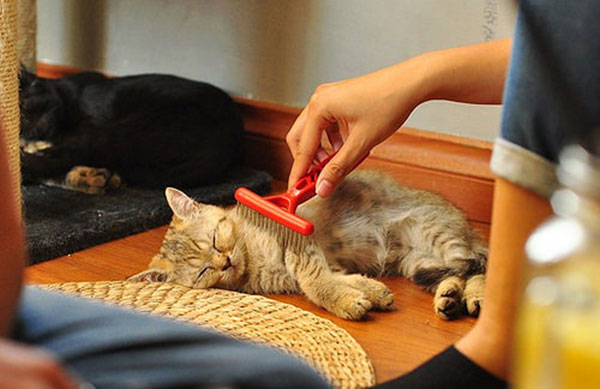

1. Dinh dưỡng phù hợp
- Mèo là loài ăn thịt bắt buộc, cần thức ăn giàu đạm động vật.
- Chọn thức ăn hoàn chỉnh, đúng độ tuổi; chia thành nhiều bữa nhỏ.
- Luôn có nước sạch; tránh sô-cô-la, hành, tỏi, nho và đồ có cồn.
Sáu nhóm việc nhỏ mỗi ngày giúp mèo khỏe mạnh và gắn bó với bạn hơn.

| Thứ | Hoạt động | Nội dung chăm sóc |
|---|---|---|
| Thứ Hai | Chải lông | Chải toàn thân 5–10 phút, quan sát da và lông. |
| Thứ Ba | Vận động | Chơi bằng đồ chơi cần câu, khoảng 10 phút, 2 lần trong ngày. |
| Thứ Tư | Vệ sinh | Giặt ổ nằm, rửa bát ăn và bát nước. |
| Thứ Năm | Sức khỏe tinh thần | Dành thời gian âu yếm, đổi đồ chơi mới. |
| Thứ Sáu | Quan sát sức khỏe | Xem lại việc ăn uống, đi vệ sinh, mắt, tai, răng; ghi chú điều bất thường. |
| Thứ Bảy | Cắt móng, lau tai | Làm nhẹ nhàng nếu mèo hợp tác; cần thì nhờ bác sĩ thú y hướng dẫn. |
| Chủ nhật | Dọn dẹp tổng thể | Thay cát, lau khu vực của mèo, kiểm tra lịch tiêm phòng và khám. |